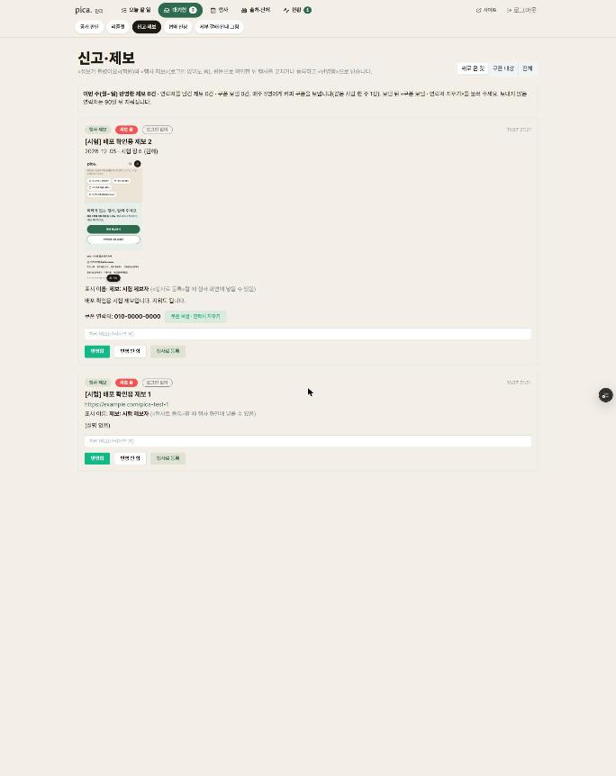

피카 · specs/020-tip-event · 2026-11-27
숨은 행사 제보 — 운영에 배포했습니다
로그인 없이 «행사 이름 + 링크나 사진 하나»로 제보하는 화면, 공개 화면 아래의 제보 띠, 커피 쿠폰 연락처(선택·동의) 처리까지 구현해 11/27 운영에 배포했고, 운영 주소에서 시험 제보 2건으로 확인했습니다.
지금 상태
운영 DB적용함새 칸 5개·접수 함수·보기
tip_entries 확인. 익명 열쇠로 제보 표를 읽으면 0줄, 보기는 401사이트배포함Vercel 성공.
picka.news/tip에 로그인 문턱 없음, 홈에 제보 띠시험 제보2건 접수 → 닫음링크 1건은 운영 화면에서, 사진+연락처 1건은 브라우저와 같은 호출로 보냄. 둘 다 «반영 안 함»
무엇이 바뀌나
| 자리 | 지금 | 바뀐 뒤 |
|---|---|---|
| 제보 화면 /tip | 로그인해야 보냄. 필수 칸 4개(이름·시작일·장소·안내 주소) | 로그인 없이 보냄. 필수는 행사 이름 + 원문 링크나 사진 한 장. 날짜·장소·덧붙일 말은 접은 칸(선택) |
| 제보로 가는 길 | 꼬리말의 작은 글자 링크 하나 | 모든 공개 화면 꼬리말 위에 띠: «행사 제보하기» + «카카오톡으로 보내기». 제보·로그인 화면에는 없음 |
| 커피 쿠폰 | 없음 | 연락처(전화번호나 이메일)를 선택으로 받고 동의를 받음. 운영자만 봄. 쿠폰을 보낸 뒤 지우고, 보내지 않은 것도 90일 뒤 지움 |
| 「제보: ○○」 | 없음 | 제보한 분이 이름을 적었고 운영자가 «행사로 등록»할 때 켜 둔 경우에만 행사 화면에 «제보» 줄로 보임 |
| 관리자 › 신고·제보 | 회원 제보만, 글만 | 로그인 없는 제보, 사진 보기, 표시 이름, 쿠폰 연락처와 «쿠폰 보냄 · 연락처 지우기», 갈래 «쿠폰 대상», 이번 주 한 줄 요약 |
| 주간 집계 | 제보와 등록한 행사가 메모 글자로만 이어짐 | 제보에 등록한 행사 id가 칸으로 남고, 사이트 제보와 카카오톡 채널 제보를 한 곳에서 세는 보기(tip_entries)가 생김. 수집 쪽이 «그 주에 실린 제보»를 한 번에 뽑음 (「문화정보 수집」 세션 요청) |
| 스팸 막기 | 로그인이 막아 줌 | 로그인 없는 제보는 사이트 전체 하루 40건, 같은 이름·같은 링크는 하루 한 번, 사람 눈에 안 보이는 칸 검사. 접속 주소(IP)는 저장하지 않음 |
| 개인정보처리방침 | 제보 = 회원 계정 | 로그인 없는 제보·사진(1년)·쿠폰 연락처(보낸 뒤 삭제, 최대 90일)·표시 이름을 적고 변경 고지에 한 줄 추가 |
화면



운영에서 확인한 것과 못 한 것
확인함 (운영 주소, 11/27)
- 로그인하지 않은 브라우저로
picka.news/tip에서 이름 + 링크(http 없이 붙임)를 보내 «고맙습니다. 제보를 받았어요»가 나옴 - 사진 + 연락처 + 동의 제보가 접수되고 사진이 비공개 저장소에 올라감. 같은 자리에 다시 올리기, 다른 경로에 올리기, 익명으로 사진 읽기는 모두 거절됨
- 같은 이름·링크 다시 보내기 → 거절, 동의 없는 연락처 → 거절
- 관리자 › 신고·제보에 두 건이 «로그인 없이»로 보이고, «사진 보기»로 사진이 열리고, 연락처와 표시 이름이 보임
- «쿠폰 보냄 · 연락처 지우기»를 누른 뒤 DB의 연락처 칸이 비고 «쿠폰 보냄 11/27»만 남음
- «행사로 등록» 화면에 «행사 화면에 제보: 시험 제보자 보이기»가 켜진 채 나옴(저장하지는 않음)
확인 못 함
- 행사 화면의 «제보: ○○» 줄 — 확인하려면 시험 행사를 공개로 등록해야 해서 하지 않았습니다. 첫 실제 제보를 등록할 때 보입니다.
- 휴대폰에서 사진을 골라 올리는 동작 — 사진 제보는 브라우저가 쓰는 것과 같은 호출로 보냈고, 화면의 파일 고르기는 눌러 보지 않았습니다.
- «행사로 등록» 저장 뒤 제보에 행사 id가 남는 것 — 운영 DB 되돌림 시험에서만 확인했습니다.
발견했지만 고치지 않은 것
- 개인정보처리방침 「처리 목적」에 «뉴스레터와 키워드 알림 메일 발송»이 남아 있습니다. 이 기능은 11/27에 없앴습니다(변경 고지에는 적혀 있음). 이번 요청 범위 밖이라 그대로 두었습니다.
- 휴대폰 홈 화면 맨 아래에서 떠 있는 «지도» 버튼이 꼬리말의 저작권 줄을 가립니다. 이번 변경과 무관하게 원래 있던 모습입니다.
🟩 직접 해 주실 것
- 매주: 관리자 › 신고·제보 → «쿠폰 대상»에서 그 주에 반영한 제보의 연락처 확인 → 5명에게 쿠폰 발송 → 줄마다 «쿠폰 보냄 · 연락처 지우기». 쿠폰 구매·발송은 돈이 나가는 일이라 운영자 몫입니다.
- 휴대폰으로 picka.news/tip을 열어 «포스터·현수막 사진 한 장 올리기»로 사진 제보를 한 번 보내 봐 주세요. 화면의 파일 고르기는 제가 눌러 보지 못했습니다. 보낸 뒤 관리자 화면에서 «반영 안 함»으로 닫으면 됩니다.
- MAX 크롬의 Supabase SQL 편집기 탭을 닫아 주세요. «사이트에서 나가시겠습니까?»가 뜨면 «나가기»를 누르면 됩니다. 페이지가 확인 창을 띄워 제가 닫지 못했습니다(안의 SQL은 지워 두었습니다).
🟩 꼭 확인할 것
- 아래 숫자는 운영자 결정이 아니라 제가 정한 기본값입니다 — 로그인 없는 제보 하루 40건(사이트 전체), 사진 10MB 이하, 쿠폰 연락처 보관 최대 90일, 제보 사진 보관 1년.
- 「같은 사람 한 주 1장」은 자동으로 묶지 않습니다. 연락처를 보고 운영자가 가립니다.
- 카카오톡 채널로 온 제보는 연락처를 받지 않습니다. 그 제보자에게 쿠폰을 주려면 채널 1:1 채팅으로 건네야 합니다.
🟩 골라 주실 것
- 시험 제보 2건(«[시험] 배포 확인용 제보 1·2», 반영 안 함)과 시험 사진 1장(사이트 화면 캡처)이 운영 DB·비공개 저장소에 남아 있습니다. 그대로 두거나(사진은 1년 뒤 자동 삭제), 지워 달라고 하시면 지웁니다.